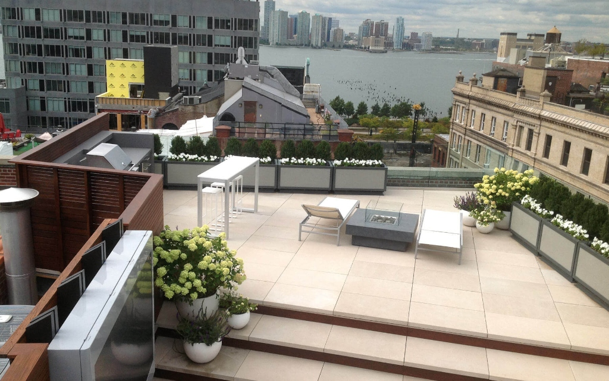

Penthouse Rooftop
Tribeca Skyline Tower, NY
Skyline Penthouse Sanctuary
An ultra-luxury 48th-floor rooftop oasis with custom Indonesian teak floating decking, structural windbreak glass pergolas, and sculpted century olive trees.
Total Footprint
2,450 sq ft
Sun Exposure
Full South-West
Irrigation
Solar Smart Drip
Completion
Spring 2025